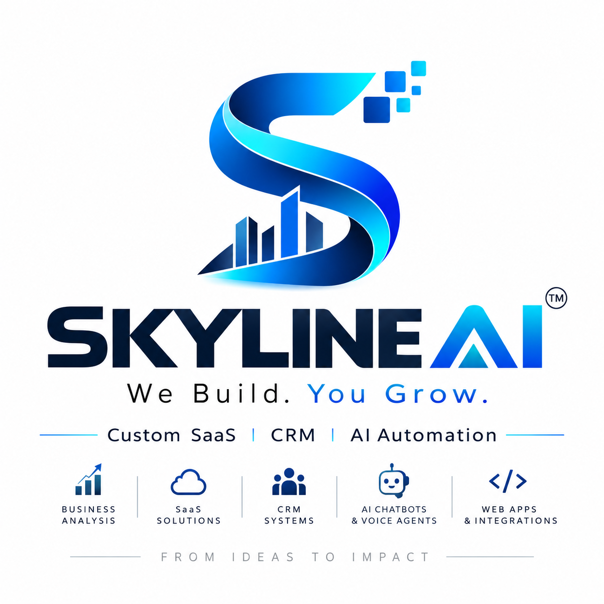

Custom SaaS
Purpose-built business applications shaped around the actual operating process.

SKYLINEAIWe Build. You Grow. Let's TalkCUSTOM BUSINESS SYSTEMS • ANANTAPUR, INDIA
Skyline AI studies how your business really works, identifies repetitive work and process gaps, then builds the right custom SaaS, CRM or AI automation solution.
WHAT WE DO
Purpose-built business applications shaped around the actual operating process.
Customer, lead, follow-up, sales and team workflows in one practical system.
Reduce repetitive work across follow-ups, communication, reporting and operations.
Study the current workflow first and identify where time, money or opportunities are leaking.
SELECTED INDUSTRIES
OUR WORK
Poultry operations covering sales, purchases, stock reconciliation, customer credit, suppliers, receivables and staff salary workflows.
Admin and staff workflows for fruit mandi trading and commission operations.
Farmer entries, purchases, stock, sales, settlements, ledgers and daily business reporting.
Project descriptions shown here are functional summaries. Client results and performance claims are published only when verified.
HOW SKYLINE AI THINKS
FOUNDER
MBA graduate with 15 years of experience across NBFC, finance, management, marketing and sales, including service as a District Manager with NABARD Financial Services. Today, he is also an entrepreneur running his own trading business.
That operating experience shapes Skyline AI's approach: understand the owner's real workflow, identify the pain and gaps, and build a practical system around the business.
“Don't start with the software. Start with the pain in the business.”
BUSINESS PAIN FINDER
Choose the closest problem. This first version starts a guided enquiry; the conversational AI assessment is the next connected phase.